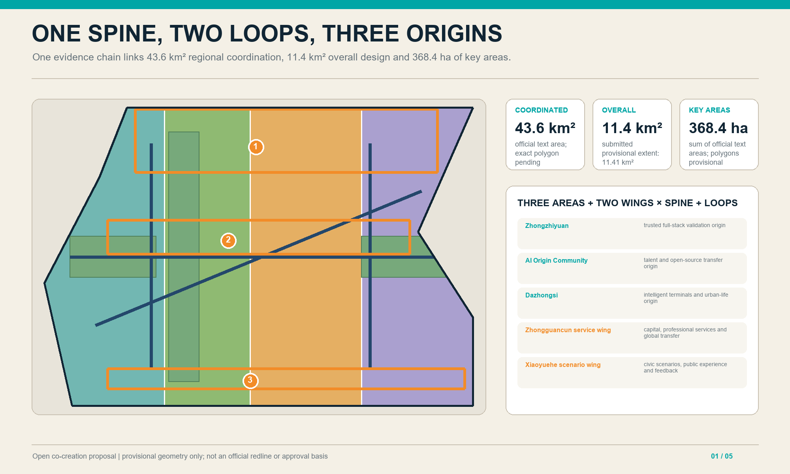
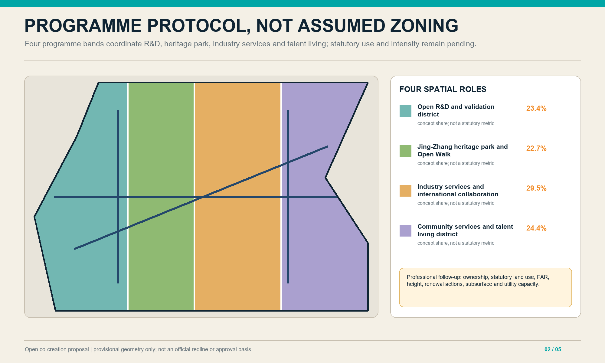
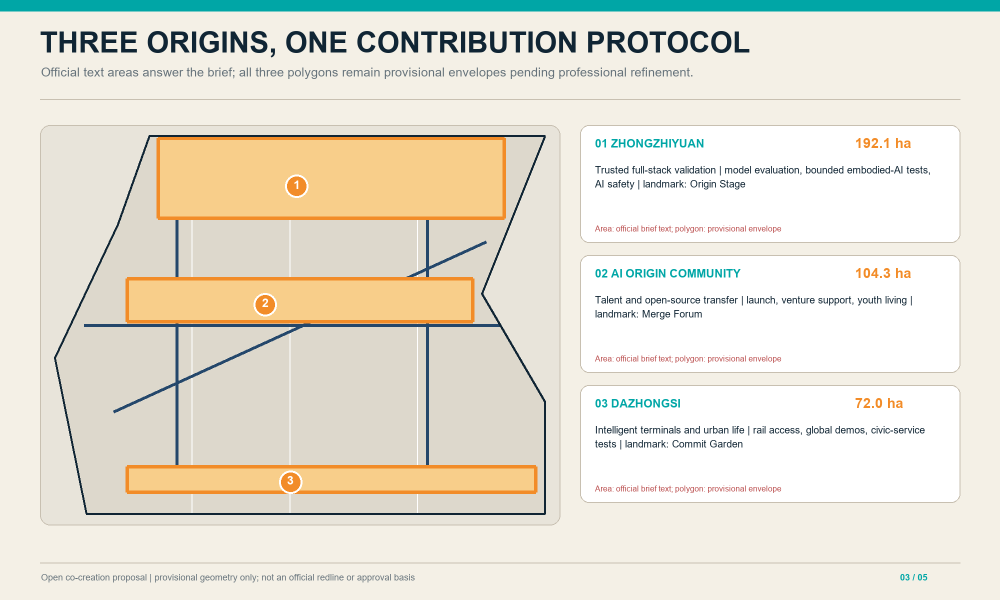
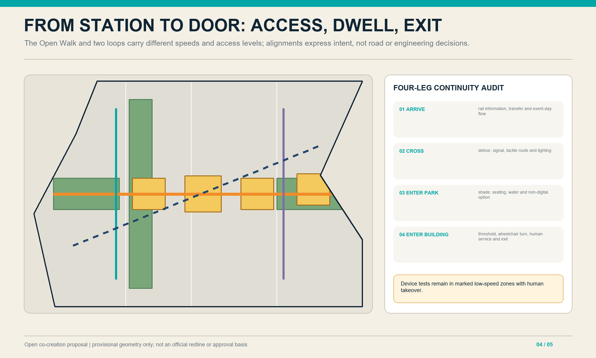
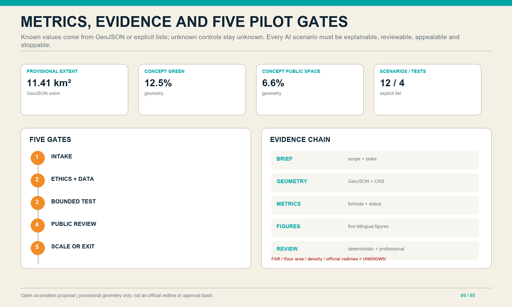

01
Concept and three-scale response

02
Land-use and programme protocol

03
Differentiated key-area prototypes

04
Mobility, blue-green and public space

05
Metrics, evidence and five gates

Five gates for AI pilots
- 1Problem intake
- 2Ethics and data review
- 3Bounded test
- 4Public evaluation
- 5Scale or exit